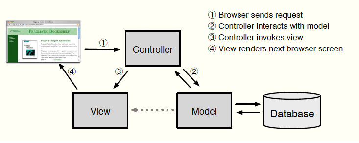

MVC
|  |
Model
- A model represents the information (data) of the application and the rules to manipulate that data.
- In the case of Rails, models are primarily used for managing the rules of interaction with a corresponding database table.
- In most cases, each table in your database will correspond to one model in your application.
- The bulk of your application’s business logic will be concentrated in the models.
|
View
- Views represent the user interface of your application.
- In Rails, views are often HTML files with embedded Ruby code that perform tasks related solely to the presentation of the data.
- Views handle the job of providing data to the web browser or other tool that is used to make requests from your application.
|
Controller
- Controllers provide the “glue” between models and views.
- In Rails, controllers are responsible for processing the incoming requests from the web browser, interrogating the models for data, and passing that data on to the views for presentation.
|
|